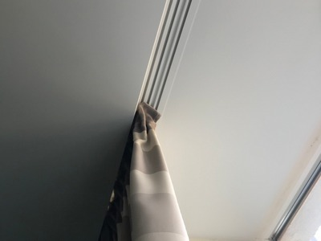
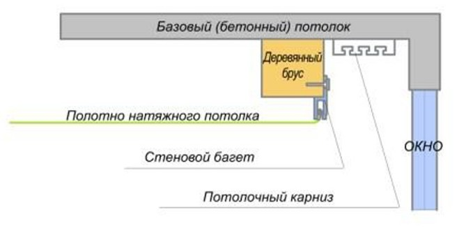
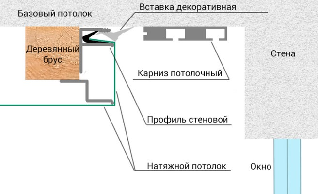
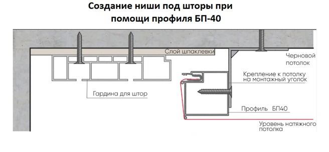
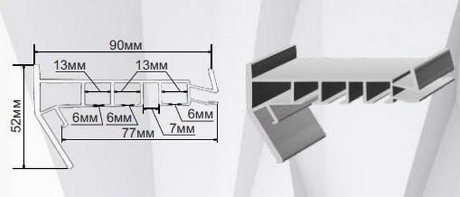
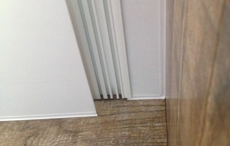

Натяжна стеля з прихованим карнизом в Києві

Завдяки зазору між натяжним полотном і базовим стелею в натяжних стелях можна виконувати ніші. Це ефективний дизайнерський інструмент, який додасть родзинку інтер'єру вашого приміщення. У цій статті ми розповімо про нішах в натяжній стелі, які пропонують фахівці нашої компанії Nova Stelya.
Ніші під штори
Вони необхідні для того, щоб заховати за полотном карниз для штор і гардин. Візуально буде здаватися, що вони будуть виходити прямо з полотна. Виходить стильно і оригінально.
Існує кілька варіантів створення таких ніш.
Варіант 1. Використання стандартного профілю.
Це найбільш трудомісткий варіант і наші фахівці його клієнтам не пропонують. Суть його в тому, що на базовій стелі в місці, де повинен встановлюватися карниз, кріпиться брус. На нього встановлюється звичайний стіновий або стельовий алюмінієвий профіль, до якого кріпиться натяжна полотно.
Краще ставити клеєний брус, щоб його не повело при висиханні. Також ми рекомендуємо кріпити брус до стелі через заставні елементи, а не безпосередньо саморізами.

При даній схемі з боку ніші (наприклад, якщо зайти на балкон) брус і багет будуть видні. Щоб цього уникнути, на брус до нижньої частини кріплять спеціальний профіль, за допомогою якого повертають полотно на 900 вгору і фіксують стіновим багетом, прикріпленим збоку бруса.

Варіант 2. Використання багета БП 40
Щоб не створювати таку громіздку конструкцію (брус + додатковий профіль + стіновий багет) можна використовувати алюмінієвий багет БП 40 (розміри перетину 40 х 40 мм), який один все це замінює. Для його кріплення до базового стелі використовуються спеціальні кронштейни. В цьому випадку монтаж виходить значно швидше. Довжина багета 2,5 м. Якщо ніша повинна бути довшою, необхідно стикувати кілька багетів.

Варіант 3. Використання багета ПК 5
Цей варіант є подальшим удосконаленням варіанту з БП 40. Тобто до багета ПК 5 також можна приєднати з двох сторін на різних рівнях натяжне полотно. Але, крім того, він має три напрямних для гачків для штор. Тобто виконує ще й функцію карниза. В цьому випадку немає необхідності в заставній для карниза. Монтаж ніші максимально спрощується. Довжина багета 2,5 м.

Кілька рекомендацій по нішах під штори
- Ширина ніші вибирається виходячи з того, що штора/гардина не повинна доходити до краю ніші мінімум на 4-5 см. Реальний розмір повинен вказати клієнт, виходячи зі зручності заміни гардин і штор.
- Довжина ніші зазвичай дорівнює довжині стіни приміщення, на якій висить штора. Але, якщо вікно невеликих розмірів і, відповідно, невеликий карниз, то довжину ніші можна зробити по карнизу плюс необхідні зазори. Але це збільшить її вартість, так як монтаж виходить складніше.
- Наші фахівці можуть зробити нішу з криволінійним контуром. Для цього використовують багет БП 40. У ньому через 5 мм виконані надрізи, завдяки яким його можна вигнути в необхідну лінію.
- Ми рекомендуємо в нішах виконувати підсвічування у вигляді декількох точкових світлодіодних світильників або світлодіодних стрічок. Виходить дуже видовищно.
Більш детально про нішах для штор розкажуть наші фахівці і порекомендують для вас оптимальний варіант.
Ніші для світильників, пересувних перегородок і розсувних дверей
Сучасний тренд для світильників в натяжних стелях – встановлювати їх в нішах. Цей варіант володіє не тільки новизною дизайнерського рішення, але і має кілька практичних переваг:
- Простота обслуговування і заміни світильників. Освітлювальний же прилад, встановлений безпосередньо в стелі, замінити іншим, що відрізняється габаритами і способом кріплення, практично неможливо.
- Можна встановити трекову систему освітлення, завдяки якій світильник можна пересувати, змінюючи зони освітлення і вносячи новизну в інтер'єр.
Ніші для світильників виконуються за допомогою алюмінієвих профілів шириною 25 -80 Мім і висотою 25-65 мм. До цих профілів можна з двох сторін стикувати натяжне полотно. Профіль кріпиться в потрібному місці базової стелі. До нього підводяться електричні дроти, в нього встановлюють світильники. Після чого натягується полотно.
Крім світильників така ніша може використовуватися для установки пересувних перегородок і розсувних дверей. У них, в цьому випадку, встановлюють напрямні.
Переваги компанії Nova Stelya

Наші фахівці мають великий досвід створення різноманітних ніш в натяжних стелях. З деякими нашими роботами ви можете ознайомитися вище. Ми використовуємо сучасні профілі, завдяки яким помітно поліпшується якість робіт і скорочується час монтажу. З клієнтами ми укладаємо договір і надаємо гарантію.
Крім якості та оперативності своїм клієнтам ми гарантуємо:
- установку тільки сертифікованих, екологічно безпечних натяжних стель від відомих брендів;
- велику різноманітність полотен − за фактурою, кольором і т. д.;
- вигідні ціни − просимо ознайомитися з нашим прайсом.
Відповіді на найбільш часті питання по нішах в натяжних стелях
🤗 Створення ніші для тканинного натяжної стелі таке ж, як і для плівкового?
Технологія та ж. Відрізняються лише багети.
🤗 У разі зняття штор з карниза, встановленого в ніші, чи є ризик пошкодити натяжне полотно? Як міняти гардини в ніші для штор?
Якщо ширина зазору достатня для такої операції, то ризику немає. Наші фахівці допоможуть вам визначитися з потрібною шириною. У разі тканинної стелі ризик ще більш зменшується, так як тканина набагато міцніше плівки.
🤗 Установка світильників в ніші для штор не представляє небезпеки з точки зору можливості виникнення пожежі?
Ні, ми ставимо світлодіодні світильники, які не нагріваються. Точно такі ж, наприклад, ставлять в шафу-купе з одягом і білизною.
🤗 Чи можливе створення криволінійної ніші для світильників?
Так, це можливо. За допомогою надрізів в П-образному профілі наші фахівці додадуть йому потрібну форму.
🤗 Чи збережеться герметичність натяжної стелі з нішею?
Вода може пройти через отвори для кріплення профілю до базової стелі. Але лише в тому випадку, якщо протока буде безпосередньо над профілем. В інших випадках герметичність стелі буде така ж, як і у стандартної, без ніші.